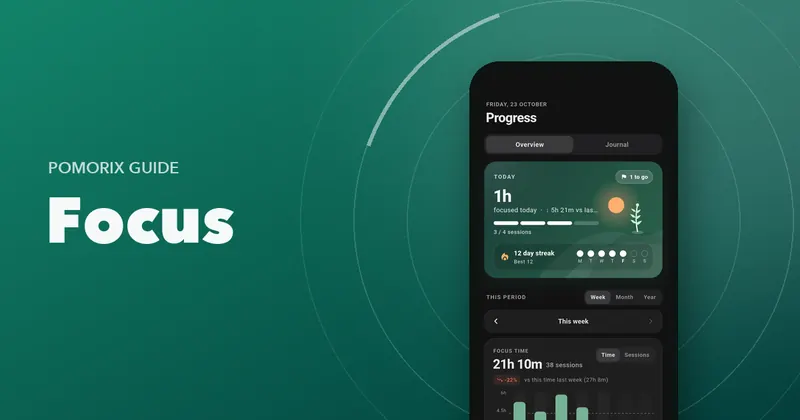

How to Do Deep Work: Plan, Protect and Track Your Deep Work Sessions
A practical guide to deep work: what it is, how long sessions should be, how to schedule and protect them, and how to measure your deep work over time.

On this page
- Deep work vs shallow work
- Step 1: Decide what deserves deep work
- Step 2: Schedule sessions in advance
- Step 3: Choose your session length
- Step 4: Build a start ritual
- Step 5: Protect the session
- Step 6: Batch your shallow work
- Step 7: Shut down properly
- Step 8: Measure your deep hours
- Common deep work mistakes
- Questions people ask
Key takeaways
- Deep work is distraction-free focus on cognitively demanding tasks: the work that creates most of your value.
- Schedule it in advance, in blocks of 50 to 90 minutes, at your best time of day.
- Protect it with rituals: same place, clear goal, phone away, notifications off.
- Track deep hours each week. Around 3 to 4 hours a day is a strong, sustainable target.
Most of what makes you valuable, whether you're a student, a developer, a writer or a researcher, comes from a small number of hours of hard, focused thinking. Cal Newport called this deep work in his 2016 book of the same name: focused, distraction-free work on cognitively demanding tasks.
The trouble is that deep work doesn't happen by accident. It needs to be planned, protected and practised. Here's how.
Deep work vs shallow work
| Deep work | Shallow work |
|---|---|
| Writing a chapter or report | Answering email |
| Designing or debugging a system | Status meetings |
| Solving a hard problem set | Formatting documents |
| Learning a difficult concept | Scheduling and admin |
| Research and analysis | Chat and quick replies |
Shallow work isn't bad; it's necessary. The problem is that it expands to fill your day unless deep work has protected time of its own.
Step 1: Decide what deserves deep work
List the two or three tasks that would make the biggest difference this week. These get your deep sessions. Everything else is shallow work to batch into lower-energy times.
Step 2: Schedule sessions in advance
Put deep work on your calendar as if it were a meeting with your most important client. Common approaches:
- Daily rhythm: the same block every day, for example 9:00 to 11:00. The easiest to sustain.
- Bimodal: whole days (or half-days) dedicated to deep work, others for shallow work.
- Opportunistic: grabbing deep sessions whenever time opens up. Hardest for beginners.
For most people, the daily rhythm wins. Put it at your best time of day; if you don't know when that is, track your sessions for two weeks and look.
Step 3: Choose your session length
| Your experience | Session | Break | Per day |
|---|---|---|---|
| New to deep work | 25–30 min | 5 min | 2–4 sessions |
| Some practice | 45–50 min | 10 min | 3–4 sessions |
| Experienced | 60–90 min | 15–20 min | 2–3 sessions |
Some deep tasks don't fit fixed blocks. A count-up timer lets you keep going while you're in the zone and take a proportional break when you stop. See Flowtime vs Pomodoro and how to choose your session length.
Step 4: Build a start ritual
Rituals reduce the friction of starting. Make yours the same every time:
- Same place. A desk, a library seat, a particular café.
- Clear goal. Write what “done” looks like for this session.
- Phone away, notifications off, email and chat closed.
- Everything ready: water, notes, files open.
- Same cue: start the timer, put on the same focus sound.
Step 5: Protect the session
- Turn on Do Not Disturb for the whole block.
- Tell people when you're unavailable, and when you'll be back.
- Keep a “later” list for anything that pops into your head.
- Don't switch, even for “quick” checks. Every switch leaves attention residue.
Step 6: Batch your shallow work
Deep work gets easier when shallow work has a home too. Schedule two or three short blocks a day for email, messages and admin. Use the classic 25-minute Pomodoro for these: it keeps them contained.
Step 7: Shut down properly
At the end of the day, write down where you stopped and what's next. Newport recommends a shutdown ritual: review open tasks, plan tomorrow, and then genuinely stop. Rest is what makes tomorrow's deep work possible.
Step 8: Measure your deep hours
The simplest deep work metric is hours of deep work per week. Track it, set a target and try to grow it slowly. Around 3 to 4 hours a day is a strong level that most people can't exceed for long. If you're starting from 30 minutes a day, getting to two hours is a big win.
Tag your sessions by project or category so you can see whether your deep time is going to the work that matters most.
Common deep work mistakes
- Starting too long. Jumping straight to 2-hour blocks usually fails. Build up.
- No clear goal. “Deep work on the project” drifts. Define the outcome.
- Leaving a door open. One open chat window is enough to break the session.
- Skipping recovery. Breaks, sleep and downtime are part of the system.
Developers have their own particular challenges with deep work. Read the Pomodoro Technique for programmers. And if your attention needs rebuilding first, start with how to improve your focus.
Questions people ask
What is deep work?
Deep work is a term popularised by Cal Newport for professional activities done in a state of distraction-free concentration that push your abilities to their limit, such as writing, programming, research or complex problem-solving. Its opposite is shallow work: emails, meetings and admin.
How long should a deep work session be?
Most people do well with 50 to 90-minute sessions followed by a 10 to 20-minute break. Beginners can start with 25 to 30 minutes and build up. A count-up timer can help you ride long sessions when you're in flow.
How many hours of deep work can you do per day?
Around 3 to 4 hours is a realistic upper limit for most people. Beginners often start at an hour or less. Quality drops quickly beyond your limit, so consistency is more valuable than occasional marathons.
Is deep work the same as the Pomodoro Technique?
Not exactly. Deep work is about what you focus on and how deeply; Pomodoro is a way of structuring time. They work well together: Pomodoro is great for starting and for shallower tasks, while longer blocks or a Flow timer suit deep work.